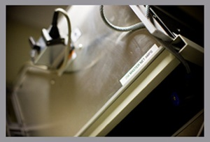
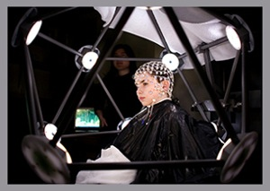

Equipment
- 
- 
EEG Data Collection Equipment
Our laboratory accommodates one 256-channel and two 128-channel dense-array electroencephalogram (EEG) systems (GES 200), as well as one portable 128-channel dense-array EEG system (GES 300). All of our EEG equipment and acquisition software is developed and supported by Electrical Geodesics, Inc. in Eugene, Oregon. Net Station 4.2 controls all data acquisition on each system and features EEG acquisition up to 1000 Hz, user-controllable amplifier settings, a Fast Fourier Transform (FFT) device for near-real-time display of spectral data, and a digital-video device for synchronized video collection. Stimulus presentation and experimental design are controlled by Psychology Software Tools’ E-prime software.
Our EEG studies utilize the innovative Geodesic Sensor Nets (GSN 200 & Hydrocel GSN), allowing us to apply a net of 128 or 256 electrodes within minutes. Maximizing subject safety and comfort, the electrodes are embedded within soft, saline-soaked sponges containing a small amount of baby shampoo. Neither scalp abrasion nor harsh gels are used with this technique. With these electrode nets we routinely record the EEG of newborns, children, and adults.
Our lab is also equipped with a Geodesic Photogrammetry System (GPS) used for the reconstruction of 3D Geodesic Sensor Net electrode positions. The GPS uses 11 CCD cameras positioned on a polyhedron-based structure to acquire a single, simultaneous, digital image of each sensor on the subject’s scalp. Later, the technician registers each coordinate using Net Station. Unlike other electrode sensor registration methods, the GPS technique utilizes 5 minutes of the subjects’ time, significantly streamlining the process for both the subject and the technician.